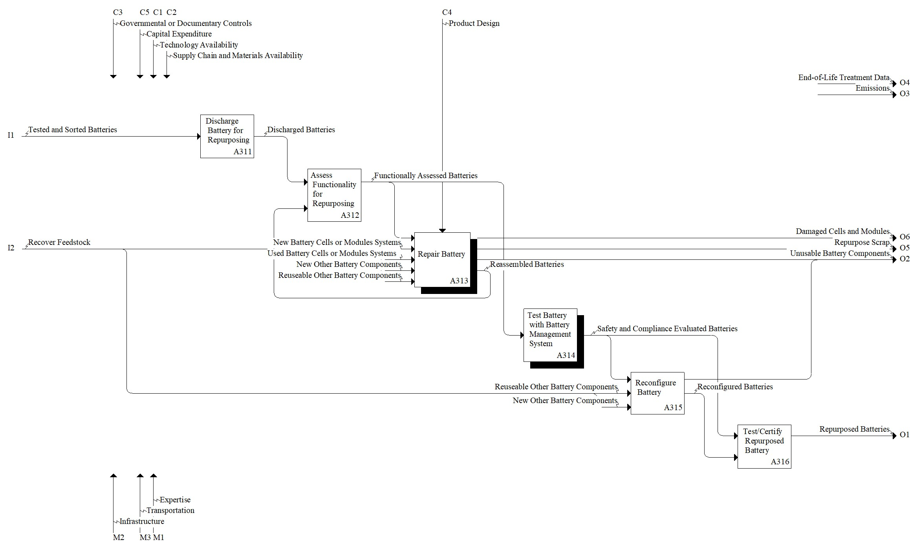

Model: Repurpose

Description
Notes:None
Definitions:
Repurpose - (to) adapt a product or its component parts for use in a different function than it was originally intended for, without making major modifications to its physical, chemical or mechanical structure. From ISO 59004:2024.
Standards:
UL 1974, Evaluation for Repurposing or Remanufacturing Batteries
UL 1974: Creating a Safe Second Life for Electric Vehicle Batteries
ISO 8887-2:2023, Technical product documentation - Design for manufacturing, assembling, disassembling and end-of-life processing - Part 2: Vocabulary
References:
Bobba S, Mathieux F, Ardente F, Blengini GA, Cusenza MA, Podias A, Pfrang A (2018) Life Cycle Assessment of repurposed electric vehicle batteries: an adapted method based on modelling energy flows. Journal of Energy Storage, 19, 213-225. https://doi.org/10.1016/j.est.2018.07.008
Chen M, Ma X, Chen B, Arsenault R, Karlson P, Simon N, Wang Y (2019) Recycling end-of-life electric vehicle lithium-ion batteries. Joule, 3(11), 2622-2646. https://doi.org/10.1016/j.joule.2019.09.014
DeRousseau M, Gully B, Taylor C, Apelian D, Wang Y (2017) Repurposing used electric car batteries: a review of options. JOM, 69(9), 1575-1582. https://doi.org/10.1007/s11837-017-2368-9
Montes T, Etxandi-Santolaya M, Eichman J, Ferreira VJ, Trilla L, Corchero C (2022) Procedure for Assessing the Suitability of Battery Second Life Applications After EV First Life. Batteries, 8(9), 122. https://doi.org/10.3390/batteries8090122
Rufino Júnior CA, Riva Sanseverino E, Gallo P, Koch D, Diel S, Walter G, Trilla L, Ferreira VJ, Pérez GB, Kotak Y, Eichman J, Schweiger HG, Zanin H (2024) Towards to battery digital passport: reviewing regulations and standards for second-life batteries. Batteries, 10(4), 115. https://doi.org/10.3390/batteries10040115
Zhu J, Mathews I, Ren D, Li W, Cogswell D, Xing B, Sedlatschek T, Kantareddy SNR, Yi M, Gao T, Xia Y, Zhou Q, Wierzbicki T, Bazant MZ (2021) End-of-life or second-life options for retired electric vehicle batteries. Cell Reports Physical Science, 2(8). https://doi.org/10.1016/j.xcrp.2021.100537
Parent Activity: Repurpose
Disclaimer: Certain commercial equipment, instruments, or materials are identified in this documentation to foster understanding. Such identification does not imply recommendation or endorsement by the National Institute of Standards and Technology, nor does it imply that the materials or equipment identified are necessarily the best available for the purpose.